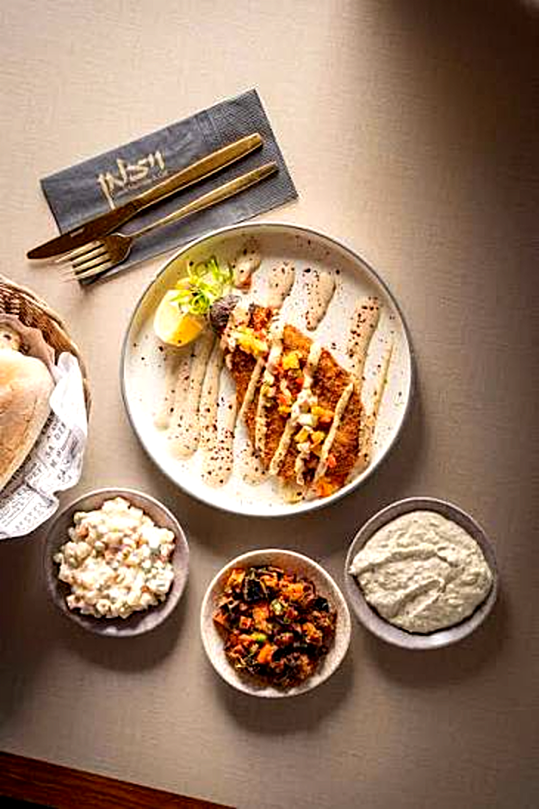

טעמים מהמטבח שלנו — בדיוק כמו שאמא הייתה מכינה
למה ויצמן?
שלוש סיבות שהופכות כל ביקור אצלנו לחוויה בלתי נשכחת
בשרים איכותיים
נתחים מהמשובחים ביותר, נבחרים בקפידה ומוכנים טרי מדי יום.
סלטים מרוקאיים טריים
למעלה מ-12 סלטים ביתיים שמוכנים בכל בוקר במטבח שלנו.
מושלם לאירועים
קיבולת עד 100 סועדים, מתאים לאירועים משפחתיים, עסקיים וחגיגות.
הדרך שלנו
שנות ה-60
הגעה לישראל
משפחת ויצמן עולה מרוקו לישראל ומביאה עמה מסורת קולינרית עשירה.
שנות ה-80
המטבח הביתי מתפרסם
שכנים, חברים ומשפחה מתחילים לבוא רק בשביל לטעום את אוכל הסבתא.
הקמה
פתיחת המסעדה
מסעדת ויצמן נפתחת בנמל אשדוד – מהמטבח הביתי לציבור הרחב.
היום
דור שלישי ממשיך
הנכדים מנהלים את המסעדה עם אותה אהבה ואותם מתכונים, עד 100 אורחים.
הערכים שלנו
כשרות מהדרין
גלאט כשר בהשגחת הרב מחפוד בד"צ יורה דעה. לא פשרה, לא שאלה.
אותנטיות
מתכונים שלא שונו. טעמים שלא התפשרו. אוכל כמו בבית.
חמימות אירוח
כל סועד מתקבל כאילו הוא משפחה. זה לא סלוגן – זו תרבות.
טריות מדי יום
12 סלטים, לאפה טרייה ובשר מהטוב ביותר – מוכנים כל יום מחדש.
מקום לכולם
מארוחה משפחתית ועד אירוע עסקי, ממסיבת בת-מצווה לארוחה רומנטית.
איכות ללא פשרות
בוחרים את הנתחים הטובים ביותר, הירקות הטריים ביותר. תמיד.